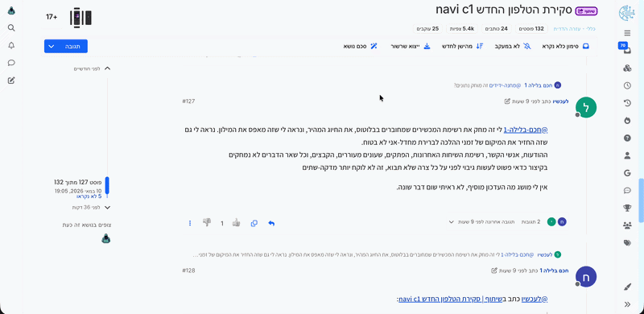

הגעתם לאשכול של 15 עמודים ואין לכם זמן לקרוא הכל? הסקריפט הזה מסכם עבורכם כל דיון בפורום לשורות התחתונות בלחיצת כפתור, ומשתלב בצורה חלקה וטבעית באתר.
התקן את הסקריפט
קורא את כל התגובות באשכול מאחורי הקלעים ומפיק סיכום מסודר של הנקודות המרכזיות, ההסכמות, והמסקנה הסופית בעזרת מודל Gemini.
משהו בסיכום לא היה ברור? בתחתית החלונית מחכה לכם תיבת צ'אט. שאלו שאלה, וה-AI יענה לכם מיד על סמך המידע שנכתב באשכול.
הסקריפט שומר אוטומטית את 20 הדיונים האחרונים שסיכמתם. בנוסף, אם תסכמו את אותו אשכול פעמיים, תוכלו לדפדף בקלות בין הגרסאות השונות.
אהבתם את הסיכום ורוצים לשתף? כפתור "פרסם" פותח את תיבת התגובה הרשמית של הפורום ושותל בתוכה את הסיכום מוכן לשליחה.
במקום לחסום לכם את המסך בזמן שהסיכום נוצר, תופיע התראה קטנה בצד שמאפשרת לכם להמשיך לגלול ולקרוא את הפורום באין מפריע.
רוצים שהסיכום יהיה קצר יותר? מפורט יותר? הסקריפט כולל עורך הנחיות מתקדם המאפשר לכם להגיד ל-AI בדיוק איך אתם רוצים את הפלט שלכם.
ודאו שמותקן לכם התוסף Tampermonkey בדפדפן. לאחר מכן, לחצו על כפתור ההתקנה הגדול בראש עמוד זה ואשרו.
היכנסו ל-Google AI Studio. בתפריט הצדדי לחצו על Get API key, צרו מפתח חדש (Create API key) והעתיקו אותו.
היכנסו לכל דיון בפורום "מתמחים טופ". לחצו על הכפתור החדש שנוסף בסרגל הכלים, הדביקו את המפתח בפעם הראשונה (הוא נשמר מאובטח אצלכם), ותתחילו לסכם.